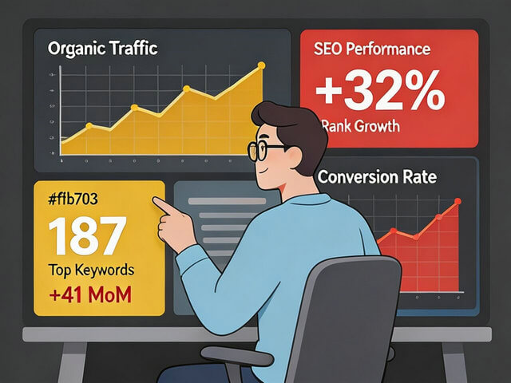

SEO是搜索引擎优化（即：Search Engine Optimization）的英文缩写，是通过优化网站内容、结构、曝光率等，提升关键词在搜索引擎上的排名，是企业数字化营销的核心基石。
SEO（Search Engine Optimization，搜索引擎优化）是指通过了解搜索引擎的排名规则，对网站进行内部和外部的优化调整， 提高网站在搜索引擎中的关键词自然排名，获得更多免费精准流量的过程。
搜索引擎通过爬虫抓取网页内容，建立索引数据库，当用户搜索时，根据算法对网页进行相关性、权威性评估， 最终展示排名结果。SEO就是让您的网站在这些评估中获得更高分数。
相比传统营销方式，SEO具备不可替代的独特优势，是企业长期发展的必选策略
相比竞价广告成本更低，无需按点击付费。一次优化，长期受益，投入产出比远超其他营销方式。 随着排名稳定，获客成本持续降低。
用户主动搜索产品或服务，意向度极高。这些都是有真实需求的潜在客户， 转化率远高于被动推送的广告流量，成交率提升5-10倍。
落地页是自己的网站，可以自由留各种联系方式：电话、微信、QQ、表单等。 不受平台限制，客户信息完全掌握在自己手中，打造私域流量池。
产品或服务的相关信息通过网页就可以清楚展示给访客，客户在咨询前已了解基本信息， 减少不必要的重复沟通，大幅提升客服效率和成交率。
搜索引擎排名靠前本身就是一种实力证明。用户天然相信排名靠前的品牌更专业、更可靠。 建立行业权威地位，增强用户信任感，打造品牌护城河。
SEO不仅仅是排名提升，更是企业品牌建设和业务增长的核心驱动力
让有需要的潜在客户，在搜索产品或服务时能够在更靠前的位置找到你。这些都是主动寻找解决方案的高意向客户， 他们会主动联系你咨询，沟通成本极低，成交速度极快。真正实现"客户找上门"的理想获客状态。
SEO是一切品牌营销的核心！任何渠道的品牌推广——无论是短视频、直播、朋友圈、线下广告—— 最后都得依赖用户搜索你的品牌时能够找到你。如果用户搜不到你，所有品牌推广都毫无意义。 SEO是所有营销活动的最终收口。
SEO可以让你的品牌相关信息成为AI大模型的权威信源！你的网站排名靠前，具有天然的权威优势， 各种AI引用网络内容时会优先引用你的信息。这样你的品牌在AI的回答中就可以获得更多曝光机会， 在AI时代抢占先机，赢在未来。
登录即可设置关键词排名优化任务，全自动智能提升各大搜索引擎排名
系统登录，简单几步即可添加关键词优化任务，系统自动开始优化网站
智能算法模拟真实用户搜索行为，提升网站在搜索引擎中的曝光与展现
系统7×24小时自动运行，无需人工干预，持续提升各大搜索引擎排名
极低的优化费用，无论是小微企业还是个人，都可以毫无负担轻松获客

立即开启SEO优化任务，让您的网站排名飙升，精准客户源源不断，业绩突飞猛进！您与成功只有一个按钮的距离……
立即开始优化